Tier 1 — Very basic
read in 30 secondsThe whole thing in four sentences
Two models generate HTML from the same prompt and are scored against each other. Remote models run in Azure AI Foundry and cost money per token; browser models run on your own GPU and cost only electricity; Ollama models run on your machine and only exist in local development.
If nobody picks a winner within 60 seconds, a Foundry model (gpt-5.4-nano) decides instead. At a realistic 300 duels a month the entire Azure bill is roughly $1.30.
There is no Anthropic integration in this codebase — no SDK, no API key, no model. Nor is there OpenAI-direct, Google, Bedrock or Mistral. Azure AI Foundry is the single paid door.

DOCS/diagrams/ai_services_t1.mmdTier 2 — Basic overview
primary services and flowsService inventory
| Service | Provider | Kind | Where it runs | Billed? | Configured by |
|---|---|---|---|---|---|
| Chat completions (duels) | Azure AI Foundry | LLM inference | Azure — po-aiservices-shared | Yes — per token | AzureAiFoundry:Endpoint / :ApiKey |
| Chat completions (auto-judge) | Azure AI Foundry | LLM-as-judge | Azure — same resource | Yes — per token | AiJudge:Deployment |
| Deployment reachability probe | Azure AI Foundry | LLM inference (16-token) | Azure — same resource | Yes — uncounted | named client "Foundry" |
| WebLLM / MLC | In-browser (WebGPU) | LLM inference | The visitor's GPU | No API cost | Model.WebLlmModelId |
| Ollama | Local daemon | LLM inference | localhost:11434 | No API cost | Ollama:BaseUrl |
Weights + model_lib delivery | HuggingFace CDN + raw.githubusercontent.com | Static asset | Two separate hosts | No | BrowserModels:CdnBaseUrlTemplate |
| Key Vault | Azure | Secret source | kv-poshared | Negligible | KeyVault:Uri |
| Application Insights | Azure Monitor | Telemetry sink | Azure | Ingestion-based | ApplicationInsights:ConnectionString |
Cost at a glance
Projected monthly Azure AI spend
Chart requires an internet connection for Chart.js; the identical figures are in the table beside it.
| Pairing profile | 30 duels/mo | 300 duels/mo | 1,500 duels/mo |
|---|---|---|---|
| Cheapest priced pair Phi-4 Mini × 2 | $0.05 | $0.53 | $2.66 |
| Blended average across the 5 priced models | $0.13 | $1.33 | $6.64 |
| Most expensive priced pair GPT-5.4 Mini × 2 | $0.36 | $3.60 | $18.01 |
| Browser vs browser judge still runs | $0.03 | $0.31 | $1.55 |
InputTokenPricePerMillion and OutputTokenPricePerMillion left null on purpose (a guessed rate becomes a wrong number on screen). Duels using them charge Azure normally but record ApiCostUsd = null, so real spend is higher than anything this application can report. Tier 3 names all seven.
DOCS/diagrams/ai_services_t2.mmdModel families in the catalog
Catalog composition by execution path
Output price per million tokens (priced models only)
Tier 3 — Complete implementation detail
granular specs & telemetryAiPricing configuration section in this repository. A grep for AiPricing across src/, infra/ and every appsettings*.json returns nothing. Per-token rates are per-model columns in Azure Table Storage, seeded from the literal list in ModelSeeder.cs (lines 45–62) and surfaced through Model.InputTokenPricePerMillion / OutputTokenPricePerMillion. Every projection below is derived from that list. If a future AiPricing section is introduced, this report's basis must move with it.Service × Model × Version matrix
| Display name | Type | Seed ModelId | Deployment / asset id | In $/M | Out $/M | Config vs fallback | Env |
|---|---|---|---|---|---|---|---|
| GPT-5 Nano | Remote | …000M | gpt-5-nano | 0.05 | 0.40 | Configured | All |
| GPT-5.4 Nano judge | Remote | …000N | gpt-5.4-nano | 0.20 | 1.25 | Configured | All |
| Phi-4 | Remote | …000P | phi-4 | 0.125 | 0.50 | Configured | All |
| Phi-4 Mini | Remote | …000Q | phi-4-mini-instruct | 0.075 | 0.30 | Configured | All |
| GPT-5.4 Mini | Remote | …000R | gpt-5.4-mini | 0.75 | 4.50 | Configured | All |
| GPT-5.4 | Remote | …000S | gpt-5.4 | null | null | Unpriced backfilled on next seed run | All |
| GPT-5 Mini | Remote | …000T | gpt-5-mini | null | null | Unpriced | All |
| GPT-4.1 Mini | Remote | …000V | gpt-4.1-mini | null | null | Unpriced | All |
| Llama 3.3 70B | Remote | …000W | Llama-3.3-70B-Instruct | null | null | Unpriced | All |
| Codestral 2501 | Remote | …000X | Codestral-2501 | null | null | Unpriced | All |
| Kimi K2.7 Code | Remote | …000Y | Kimi-K2.7-Code | null | null | Unpriced | All |
| Grok 4.1 Fast | Remote | …000Z | grok-4-1-fast-non-reasoning | null | null | Unpriced | All |
| SmolLM2 135M | Local | …0001 | SmolLM2-135M-Instruct-q0f32-MLC | n/a | n/a | 719 MB VRAM | All |
| SmolLM2 360M | Local | …0002 | SmolLM2-360M-Instruct-q4f32_1-MLC | n/a | n/a | 580 MB VRAM | All |
| SmolLM2 1.7B | Local | …0003 | SmolLM2-1.7B-Instruct-q4f16_1-MLC | n/a | n/a | 1,774 MB VRAM | All |
| Qwen2.5 0.5B | Local | …0004 | Qwen2.5-0.5B-Instruct-q4f32_1-MLC | n/a | n/a | 1,060 MB VRAM | All |
| Qwen3 1.7B | Local | …0005 | Qwen3-1.7B-q4f16_1-MLC | n/a | n/a | 2,037 MB VRAM | All |
| Llama 3.2 1B | Local | …0006 | Llama-3.2-1B-Instruct-q4f16_1-MLC | n/a | n/a | 879 MB VRAM | All |
| Gemma 2 2B | Local | …0009 | gemma-2-2b-it-q4f16_1-MLC | n/a | n/a | 1,895 MB VRAM | All |
| Gemma 4 (Ollama) | LocalService | …000A | gemma4:latest | n/a | n/a | Requires local daemon | Dev only |
| Qwen 3.5 (Ollama) | LocalService | …000B | qwen3.5:latest | n/a | n/a | Requires local daemon | Dev only |
retired Seed 007 Llama 3.2 3B and 008 Phi-3.5 Mini — both fail to load in the browser (lost GPU device / 2.1 GB weights exceed the 2,048 MB maxBufferSize). Ids are burnt and must never be reused. | |||||||
Codestral-2501 routes through the Mistral MaaS endpoint, which rejects stream_options.include_usage with HTTP 422 — “Extra inputs are not permitted”. Every Codestral duel therefore failed before producing a token, and the leaderboard showed it losing on merit. FoundryChatRequest.SupportsStreamUsage() is now a deny-by-default allow-list of native Azure OpenAI prefixes (gpt-, o1, o3, o4, phi-, llama-, grok-); anything else gets the lean body. Consequence for this report: a non-native deployment sends no usage block, so PromptTokenCount stays null and its input-token cost cannot be computed even once a price is filled in.Local row's asset id must also exist in prebuiltAppConfig inside web-llm.js. SCRIPTS/plan-webllm-artifacts.py parses both and exits non-zero when they diverge — the only automated check on this table. The seeder itself only inserts when the Models table is empty, then reconciles: it adds missing seed rows and back-fills only null price columns, never a DisplayName or an ELO.Route bindings — every call site that reaches an AI service
| Route / trigger | Auth | AI calls made | Cost recorded? | Source |
|---|---|---|---|---|
| POST /api/duels | Required† | 2 inference calls (one per side; 0–2 hit Foundry) + 1 judge call | Yes — ApiCostUsd per side, when priced | DuelsEndpoints.cs:29 |
| GET /api/models/availability | Required | 1 probe per remote model = up to 12 Foundry calls, 16 output tokens each, plus a 404 retry on the fallback route | No — never persisted | GetModelAvailabilityHandler.cs |
| POST /api/duels/{id}/local-result | Anonymous | None — receives finished browser output | Energy only | DuelsEndpoints.cs:104 |
| GET /api/duels/demo-plan | Required | None — pure planning | n/a | DemoPlanHandler.cs |
| GET /api/ollama/gpu-status | Required | Ollama /api/ps | Free | OllamaEndpoints.cs |
| GET /api/ollama/available-models | Required | Ollama /api/tags | Free | OllamaEndpoints.cs |
| POST /api/ollama/benchmark | Required | 1 timed Ollama completion | Free | BenchmarkOllamaModelHandler.cs |
| /demo (client page) | Required | 10 × POST /api/duels with autoJudgeDelaySeconds: 0 — all remote-vs-remote | Yes | Demo.razor · DemoPlanner.cs |
| AutoJudge (no route) | n/a — in-process | 1 Foundry call per finished, still-Pending duel | No — judge spend is never attributed to a duel | AutoJudge.cs · FoundryDuelJudge.cs |
† Opened to anonymous callers when Features:AllowAnonymousWrites is true — the default in appsettings.Development.json. See the roles & permissions matrix.
Request parameters by call type
| Call type | Token budget | Temperature | Stream | Response format | Timeout |
|---|---|---|---|---|---|
| Duel — classic model | max_tokens: 4096 | 0.7 | Yes — stream_options.include_usage only when SupportsStreamUsage() passes | free text | 120 s (clamped 30–900) |
| Duel — reasoning model | max_completion_tokens: 16384 | omitted (400 if sent) | Yes + usage | free text | 120 s |
| Duel — proxied model (Codestral 2501) | max_tokens: 4096 | 0.7 | Yes — stream_options omitted | free text | 120 s |
| Judge | max_completion_tokens / max_tokens: 2000 | 0.0 (classic only) | No | json_schema, strict, {winner: A|B|Tie, reason ≤ 200} | AiJudge:TimeoutSeconds 30 s, clamped 5–300; client 60 s |
| Availability probe | 16 | 0 | No | free text | 6 s per probe |
| Ollama duel | max_tokens: 4096 | 0.7 | Yes | free text | Infinite — bounded by the 900 s watchdog |
Both duel proxies send the same system message: "You are an expert HTML/CSS coder. Return only valid HTML5 with inline CSS. No markdown, no explanation, no code fences." The judge sends a separate system prompt that explicitly instructs it to treat both documents as untrusted data, to ignore instructions inside them, and not to reward length.
Capability matrix
| Capability | Foundry (duel) | Foundry (judge) | Ollama | WebLLM browser |
|---|---|---|---|---|
| SSE token streaming | ✔ | ✘ single completion | ✔ | ✔ worker-local only |
| Provider usage block (prompt/completion tokens) | ✔ via include_usage — native deployments only | not read | ✔ when sent | ✘ token count is client-counted |
| Reasoning-token accounting | ✔ ReasoningTokenCount | – | ✘ | ✘ |
| Structured output (JSON schema) | ✘ not used | ✔ strict | ✘ | ✘ |
| Two-endpoint 404 fallback | ✔ | ✔ | n/a | n/a |
429 Retry-After handling | ✔ clamp 1–90 s, 3 attempts | ✔ clamp 1–60 s, requeue ≤ 2 | n/a | n/a |
| Per-token cost attribution | ✔ when priced | ✘ judge spend unattributed | free | free |
| Energy accounting (Wh + USD) | ✘ | ✘ | ✔ | ✔ |
| OpenTelemetry span + metrics | ✔ gen_ai.chat | ✘ no span, no metric | ✔ | ✘ nothing at all |
Fallback and resilience policy
| Layer | Policy | Applies to | Why it is shaped that way |
|---|---|---|---|
| Route fallback | 404 on /openai/deployments/{d}/chat/completions → retry /models/chat/completions with model in the body | Duel proxy, judge, availability probe | Which route a Foundry resource exposes depends on how the model was provisioned |
Polly pipeline foundry-inference | Retry only — 2 attempts, 250 ms exponential, on HttpRequestException / 5xx / 408 | Typed FoundryInferenceProxy client | No per-attempt timeout — one would abort a long SSE stream mid-generation |
| In-proxy retry | 3 attempts on 429 / 502 / 503; 429 honours Retry-After clamped to 1–90 s, otherwise 2n s backoff | Duel inference | Foundry communicates a real retry window that Polly's generic policy would ignore |
| Judge rate-limit | 429 → JudgeRateLimitedException → requeue after Retry-After (clamped ≤ 60 s), max AiJudge:RateLimitRetryMax = 2 | AutoJudge | Stops a Foundry burst turning a 10-duel demo into one recorded verdict |
| Client timeout | AzureAiFoundry:RemoteTimeoutSeconds = 120, clamped 30–900 | Foundry duel client | Phi-4 Mini cold start exceeded the previous 35 s ceiling before first token |
| Watchdog | CancellationTokenSource(900 s) spanning both sides | Every duel | Allows for WebGPU shader JIT on a cold browser model |
| Ollama status pings | Retry 2 + 5 s per-attempt timeout | Named client OllamaStatus | Safe here because these calls are short and idempotent, not streaming |
| Judge stand-down | Unreachable, unparseable, timed out, or both sides failed → duel stays Pending | AutoJudge | ELO must never move on no evidence. RecordVerdictHandler.GuardAgainstNoEvidenceAsync independently rejects a both-failed verdict with 422. |
| Walkover 2026-08-13 | Exactly one side failed → synthetic JudgeDecision awards the survivor, without calling the judge model | AutoJudge | Reverses the earlier “leave it Pending” rule (PRD §9 item 20): the surviving output is model-quality evidence, and the failure is reflected in the loser’s DuelCount. Costs nothing — the judge call is skipped entirely. |
| Kill switch | AiJudge:Enabled = false restores human-only verdicts; a per-duel autoJudgeDelaySeconds override cannot re-enable it | AutoJudge | The master switch stays the master switch |
Cost model — derivation
Assumptions (state these whenever the figures are quoted)
- Input / side
- 115 tokens — 45-token system prompt + a ~70-token library prompt
- Output / side
- 1,200 tokens — a realistic self-contained HTML document, far below the 4,096 / 16,384 ceilings
- Judge input
- 3,300 tokens — prompt plus two outputs truncated to
AiJudge:MaxOutputChars= 6,000 chars each - Judge output
- 300 tokens of a 2,000-token reasoning budget
- Judge coverage
- ≈100% of duels.
AiJudge:DelaySeconds= 60; anything a human does not decide inside that window goes to the judge - Formula
ApiCostUsd = PromptTokenCount / 1e6 × InputPrice + TokenCount / 1e6 × OutputPrice— FoundryInferenceProxy.cs
Cost per duel side, by model
| Model | Input $ | Output $ | Per side | Pair + judge |
|---|---|---|---|---|
| Phi-4 Mini | 0.0000086 | 0.000360 | $0.000369 | $0.001773 |
| GPT-5 Nano | 0.0000058 | 0.000480 | $0.000486 | $0.002007 |
| Phi-4 | 0.0000144 | 0.000600 | $0.000614 | $0.002263 |
| GPT-5.4 Nano | 0.0000230 | 0.001500 | $0.001523 | $0.004081 |
| GPT-5.4 Mini | 0.0000863 | 0.005400 | $0.005486 | $0.012007 |
| Auto-judge call | 0.000660 | 0.000375 | $0.001035 | — |
- Judge calls.
FoundryDuelJudgenever writes aDuelResult, so its tokens are billed by Azure and recorded nowhere. At 300 duels/month that is ≈$0.31 — 23% of the blended total — invisible to every in-app cost display. - Availability probes.
GET /api/models/availabilityissues one live completion per remote model and is not cached —HybridCacheis wired into the leaderboard endpoint only, despite the architecture notes describing it as fronting model-availability reads. Each sweep costs ≈$0.000123 across the five priced models (unknown for the other seven); 1,000 page loads a month adds ≈$0.12 plus 12,000 Foundry requests against your rate limit.
Telemetry coverage and gaps
| Signal | Emitted? | Instrument / field | Consequence |
|---|---|---|---|
| Operation duration | ✔ metric | gen_ai.client.operation.duration (Histogram, s) | Aggregatable |
| Output tokens | ✔ metric | gen_ai.usage.output_tokens (Counter) | Aggregatable |
| Input tokens | ✔ metric | gen_ai.usage.input_tokens (Counter) | Aggregatable |
| Per-call span | ✔ trace | gen_ai.chat with provider/model/finish_reason tags | Traceable |
| Time to first token (TTFT) | ✘ NOT a metric | DuelResult.WarmUpDurationMs — table column only | No TTFT percentile, trend or alert is possible. The value exists per duel and is shown in the Arena HUD, but nothing aggregates it. |
| Throughput (tokens/s) | ✘ NOT a metric | DuelResult.TokenVelocity, PeakTokenVelocity (hub frame only) | No throughput dashboard. Peak velocity is streamed to the browser and then discarded entirely — never persisted, never exported. |
| Browser (WebLLM) inference | ✘ nothing | — | 7 of 21 models — a third of the catalog — produce zero spans and zero metrics; the server only ever sees the finished POST body |
| Judge calls | ✘ nothing | — | No span, no metric, no cost row; failures are visible only as Serilog warnings (EventId 1200–1213) |
| Availability probes | ✘ nothing | — | Cost and rate-limit pressure invisible |
| Trace sampling | ✔ | RateLimitedSampler — Telemetry:MaxTracesPerSecond (10/s) in Production; AlwaysOn elsewhere | Error-level Serilog events bypass sampling and ship at 100% |
Telemetry coverage by inference path
Closing the gap
Three small additions in InferenceTelemetry.cs would remove every ✘ above:
- a
gen_ai.server.time_to_first_tokenhistogram fed fromresult.WarmUpDurationMs; - a
gen_ai.server.output_tokens_per_secondhistogram fed fromresult.TokenVelocity; - calling
InferenceTelemetry.Record("browser.webllm", …)from thelocal-resultendpoint andRecord("azure.ai.foundry.judge", …)fromFoundryDuelJudge.
All three are additive and change no persisted data.
Anthropic presence — explicit confirmation
anthropic, claude-, claude-sonnet, claude-opus and @anthropic-ai across src/, infra/, SCRIPTS/ and .github/ produces exactly one hit: a bundled third-party licence file at SCRIPTS/review/node_modules/playwright-core/lib/utilsBundle.js.LICENSE. That is a vendored tooling dependency, not an integration. No Anthropic SDK, credential, endpoint or model exists in this application, and none of the 21 catalog models is an Anthropic model. The same search finds no OpenAI-direct, Google Gemini, AWS Bedrock, Cohere or Mistral client either — Directory.Packages.props lists no AI-vendor SDK at all, because both remote paths are hand-rolled HTTP against OpenAI-compatible routes.
DOCS/diagrams/ai_services.mmdConfiguration reference
| Key | Value in repo | Source of truth at runtime | Effect |
|---|---|---|---|
| AzureAiFoundry:Endpoint | not in appsettings | Key Vault / App Service | Missing ⇒ every remote duel fails with "configuration is incomplete" |
| AzureAiFoundry:ApiKey | not in appsettings | Key Vault / dotnet user-secrets | Missing ⇒ same; dev logs a startup warning |
| AzureAiFoundry:RemoteTimeoutSeconds | 120 | appsettings.json | HttpClient timeout, clamped 30–900 |
| AiJudge:Enabled | true | appsettings.json | Master switch — false restores human-only verdicts |
| AiJudge:DelaySeconds | 60 | appsettings.json | Human grace window; demo mode overrides to 0 |
| AiJudge:Deployment | gpt-5.4-nano | appsettings.json | Which model judges; stamped onto Duel.JudgeModel |
| AiJudge:TimeoutSeconds | 30 | appsettings.json | Judge call deadline, clamped 5–300 |
| AiJudge:MaxOutputChars | 6000 | appsettings.json | Per-document truncation (head + tail, middle elided) — drives judge input cost |
| AiJudge:RateLimitRetryMax | 2 | appsettings.json | Requeue budget after a 429 |
| Ollama:BaseUrl | http://localhost:11434 | appsettings.json | Ollama daemon address |
| Features:UseRealAi | true | both appsettings | False ⇒ the USING MOCK DATA banner must render in NavMenu.razor |
| GreenStats:ElectricityRateUsd | 0.12 | appsettings.json | USD/kWh for local-model energy cost |
| GreenStats:DefaultTdpWatts | 115.0 | appsettings.json | Assumed GPU draw; every seeded local model uses 115 W |